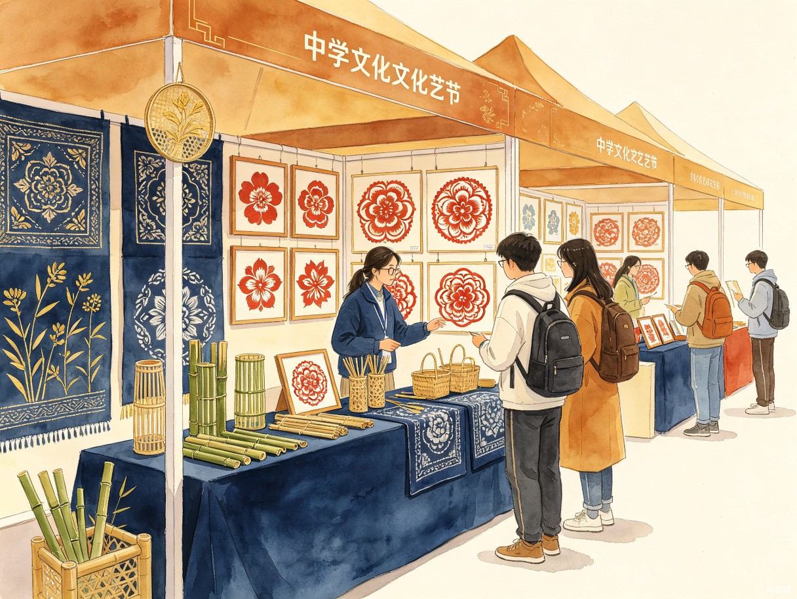
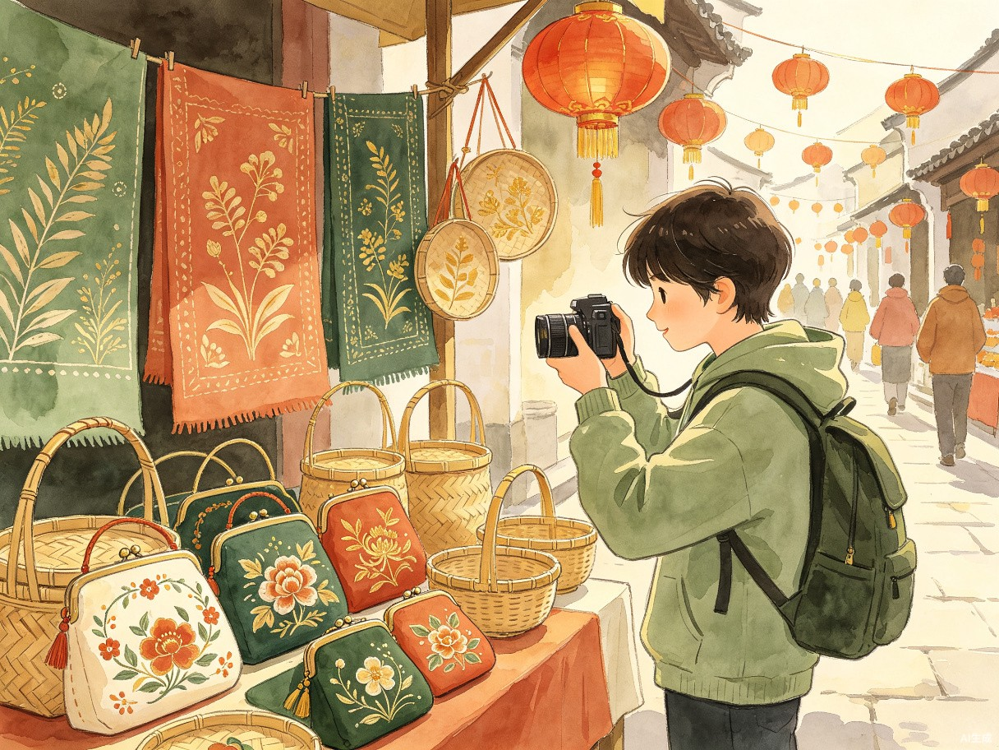
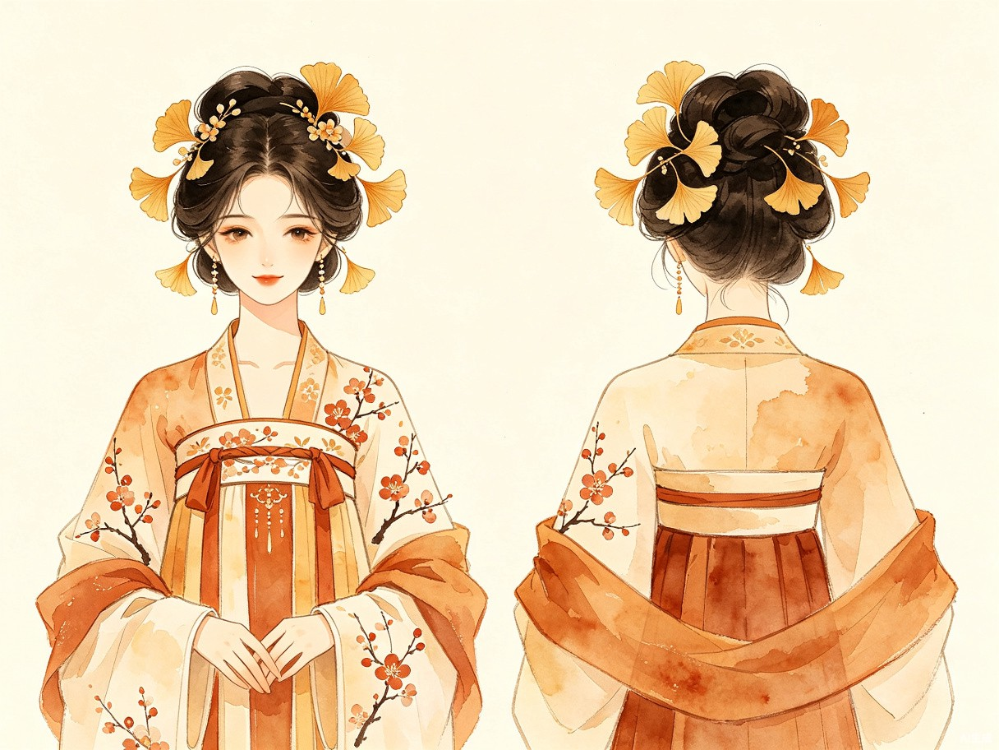
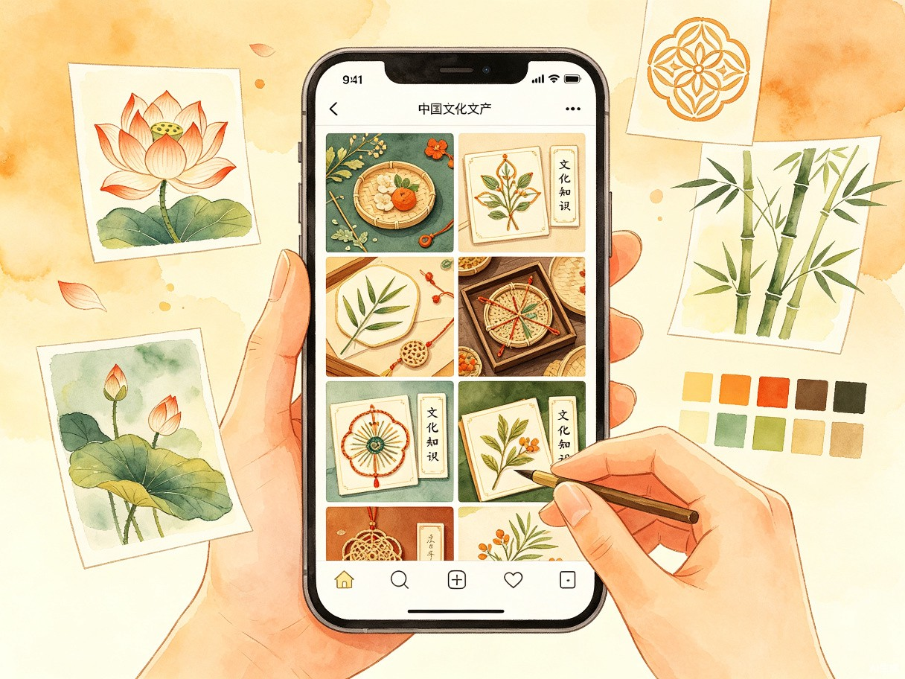
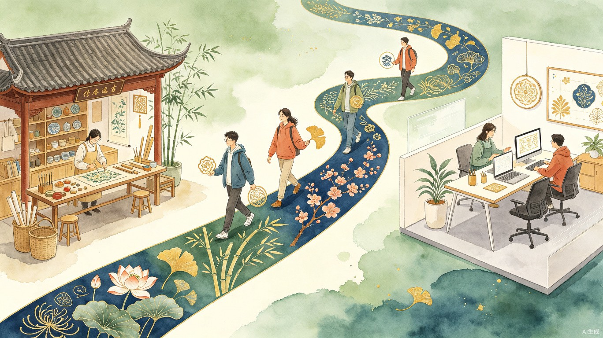

一、创意名称与介绍
想解决什么问题
很多年轻人在准备漫展原创角色、校园文化节展示、非遗市集打卡或文旅街区拍照内容时，想加入非遗元素，但不知道从哪个具体元素入手。比如用户喜欢"荷花""竹子""银杏"这样的植物意象，也想做出带有非遗特色的造型、角色或图文内容，却不清楚应该匹配哪类非遗纹样、配色、工艺或文案。
现在用户通常需要自己查资料、找参考图、整理搭配思路，过程比较分散，也容易只停留在"国风""古风"这类笼统表达上。这个作品希望把植物意象作为入口，帮助用户快速生成更具体的非遗创作方案。
为什么会想到做这个
我的兴趣包括植物、非遗文化和二次元文化，也比较熟悉漫展、校园活动和拍照打卡等场景。我发现很多非遗元素本身就和植物、自然、季节有关，例如花鸟纹样、草木染、植物纹饰和节气色彩。植物意象对年轻用户来说比较直观，也容易转化成颜色、气质和画面风格，所以我想用 AI 把"植物意象"和"非遗元素"连接起来，让用户更容易完成角色设定、活动展示和社交图文创作。
大概是什么产品
这是一个 AI 网页 / 小程序。用户选择植物意象、使用场景和风格偏好后，系统生成对应的非遗元素匹配、造型建议、原创角色设定、拍照打卡方案、文案和非遗知识卡片。
七大核心功能
非遗元素匹配
根据植物意象智能匹配对应的非遗纹样、配色、工艺类型
造型建议
生成适合场景的服装、配饰、妆造等造型方案
原创角色设定
基于植物意象打造完整的 OC 角色设定（服饰、性格、背景故事）
拍照打卡方案
提供道具选择、构图建议、场景搭配等拍照指导
发布文案
生成带有非遗文化来源的社交平台发布文案
非遗知识卡片
以简短卡片形式说明匹配到的非遗元素的来源与含义
各大平台相似实物推荐
根据匹配结果推荐淘宝、小红书等平台的相似非遗实物，方便用户直接购买或参考
二、目标用户及痛点
面向哪些用户
主要面向对非遗、植物审美、国风内容、二次元角色设定和拍照打卡感兴趣的年轻用户。
使用场景
漫展出行前
想设计一个带有非遗元素和植物意象的原创角色，但不知道如何确定配色、服装细节和角色背景。

校园文化节前
需要做非遗主题展示、摊位介绍或活动图文，但缺少清晰的视觉主题和文案。

非遗市集 / 文旅打卡
想围绕某个非遗主题拍照、发图，但不知道怎么选道具、构图和配文。

原创 OC / Cosplay 设定
想把荷花、竹子、梅花、银杏等植物意象转化成角色服饰、性格和故事设定。

社交平台发布前
想让图文内容不只是"好看"，还带有具体的非遗来源和文化说明。
当前痛点
信息来源分散 — 用户需要分别查非遗资料、植物寓意、配色参考、拍照姿势和文案示例，整理起来耗时。
难以转化为可用方案 — 查到的资料不一定能直接变成角色设计、造型方案或图文内容。
表达停留在笼统层面 — 容易只停留在"国风""古风"这类宽泛表达，缺乏具体的非遗元素指向。
三、价值与意义

降低创作门槛
这个作品的实际价值是降低普通用户参与非遗创作的门槛。用户不需要具备专业设计能力，也可以从一个熟悉的植物意象出发，得到一套相对完整的创作参考，比如适合的非遗元素、配色、角色设定、拍照建议和发布文案。
提升表达具体度
它也能提升非遗内容表达的具体度。相比只写"国风""传统文化"，这个工具会引导用户使用更明确的元素，例如草木染、剪纸、刺绣、竹编、花鸟纹样等，并用简短知识卡片说明这些元素的来源或含义。
连接多元场景
这样既能帮助用户节省查找和整理资料的时间，也能让非遗内容更容易出现在漫展、校园活动、文旅打卡和社交平台创作中，让传统文化以更年轻、更具体的方式走进日常生活。
草木有灵，纹以载道。
以植物意象为起点，让非遗走进每一次创作。